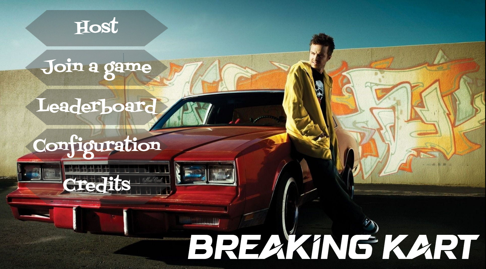
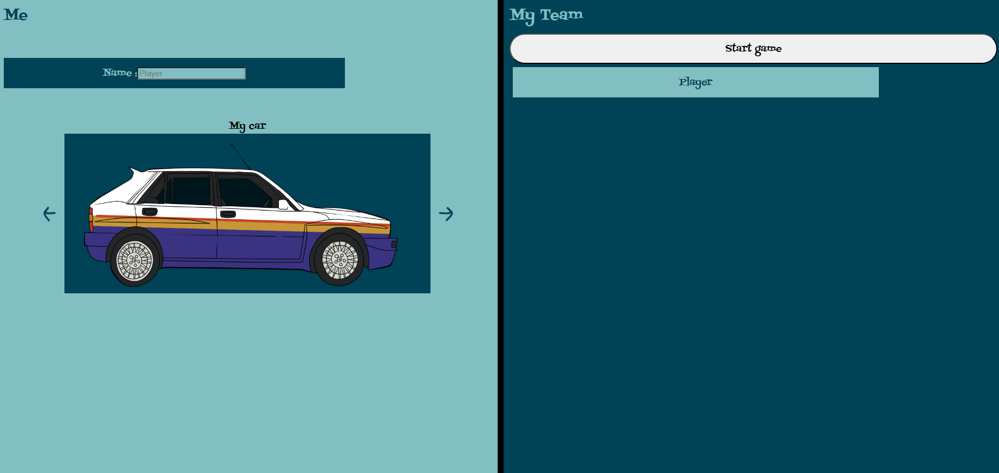
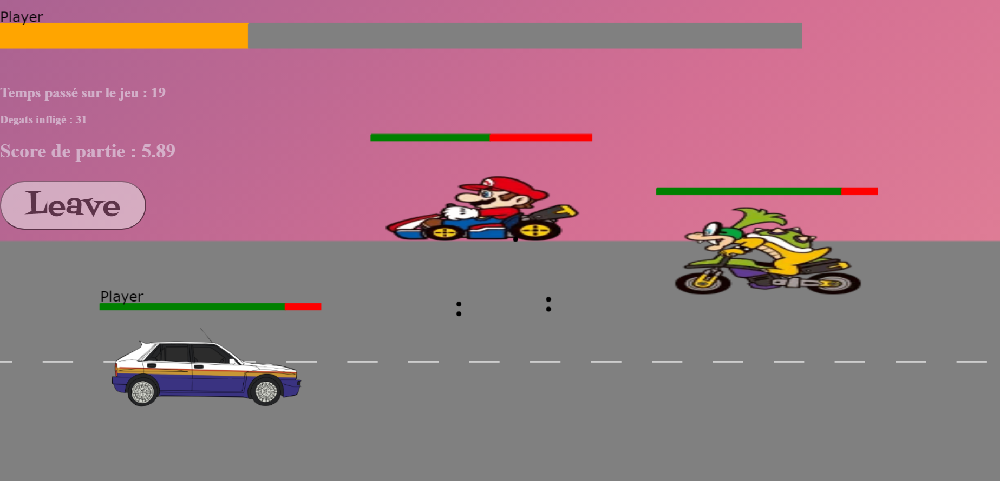
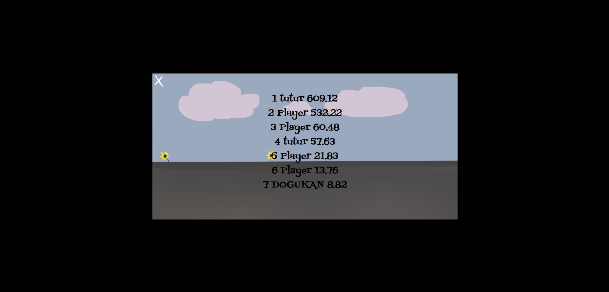

Ce projet avait pour but de creer un jeu sur terminale, en ijava, destine a une classe de primaire pour leur permettre d'apprendre des notions de cours a travers un jeu, et donc faciliter et varier leur apprentissage des notions. Avec mon binome, lors de ce projet, nous avons decide d'aborder plusieurs notions de cours, tels que, les mathematiques, le francais, l'anglais, l'histoire et la geographie, sous forme de jeu de decouverte. Plus precisement, a chaque bonne reponse de l'enfant, une partie d'un dessin se decouvrait, le but etant d'avoir a assez de bonne reponse pour decouvrir la totalite de l'image et pouvoir l'avoir dans sa collection, car en effet, un système de sauvegarde avait ete mis en place.

Dans le cadre de notre formation, ce projet etait a programmer en IJava, un langage destine lors de notre premier semestre aa nous apprendre l'algorithmique et nous preparer a l'apprentissage du langage Java.

Les As du Crous est un projet realise en debut de deuxieme annee, nous devions creer un jeu sur terminale. Ainsi, avec mon equipe, nous avons decide de creer un jeu de survie, ou nous interpretons un etudiant qui decide de jouer a differents jeu d'argent afin de survir. Pour cela, nous avons cree 5 minis jeux, ainsi qu'une boutique qui va permettre a notre personnage d'acheter de la nourriture ou des objets, avec l'argent gagne, afin d'augmenter ces barres de vie et de bonheur.

Les minis jeux present proposaient au joueur de tricher ou non, avec un pourcentage de chance que le joueur se fasse prendre la main dans le sac et doit payer une amende. Ainsi, c'est au joueur de prendre les decisions pour survir le plus longtemps possible, sachant qu'un système de sauvegarde est mis en place, pour que l'utilisateur puisse continuer une partie deja demarre, ou simplement consulte son classement.

L’objectif de ce projet etait de creer un systeme de covoiturage pour l’entreprise de notre choix. Dans notre cas, nous avons choisi l’entreprise Nvidia, qui pour ce projet, est en partenariat avec Audi pour proposer aux employes de l’entreprise un service de covoiturage optimal pour la progression dans la quête d’un monde plus ecologique. Dans notre site, les employes ont la possibilite de louer un vehicule electrique, d’effectuer du covoiturage avec ou sans leur voiture, avec la possibilite de mettre en avant leurs conditions, mais egalement la possibilite de preter leurs vehicules ou autre moyen de circulation ne consommant pas et n'entrainant pas de pollution, tels que les velos. Ainsi, la creation d’un site esthetique et facile d’utilisation etait l’enjeu principal de ce projet.

Notre jeu de chasse aux monstres plonge les joueurs dans differents mondes a thèmes, interactives grâce à une IHM. Les joueurs devront explorer un labyrinthe genere de manière aleatoire afin de trouver la sortie avant que le chasseur ne trouve son emplacement et l'elimine. Ce jeu offre la possibilite au joueur de jouer soit face à un autre utilisateur, soit face à une IA. L'IA suit un algorithme precis, surtout pour le role du monstre, ou elle va optimiser ses deplacements pour trouver le chemin le plus rapide vers la sortie. Pour ce projet, notre equipe de developpement est composee de quatre membres passionnes de jeu video, chacun apportant ses competences uniques en programmation, conception graphique, conception sonore et gestion de projet. Nous utilisons Java comme langage de programmation principal pour assurer la portabilite du jeu sur differentes plateformes. Pour ce qui est de l'algorithme du monstre, il consiste à calculer la difference en colonne et ligne, entre le monstre et la sortie, le but etant donc à la fin que la distance colonne soit egale a 0, et pareillement pour la distance ligne. Le jeu est donc un tour par tour, qui va proposer en premier au joueur du monstre de se deplacer en fonction des possibilite offertes à lui, et pour le chasseur, de tirer sur une case et de decouvrir son contenu, donc soit un mur, soit une case vide, soit le monstre ou soit une ancienne position du monstre, avec le tour auquel il est passe. Nous avons ajouté un mode multijoueur ou les deux joueurs peuvent effectuer leurs actions a tour de role sur le meme ordinateur
Notre objectif est de développer une API REST pour gerer les operations essentielles d'une pizzeria, y compris la gestion des commandes, des pizzas, des ingredients et des clients, afin d'améliorer l'efficacité des opérations. Toutes ces données sont stockées dans une base de données. Donc l'API avait pour but de manipuler la bases de données, en affichant certaines données, les modifier, les supprimer ou encore les ajouté. Nous utilisons Java EE pour developper l'API, en exploitant les servlets pour la creation des services REST et JDBC pour la communication avec la base de donnees SQL. Nous concevons une base de donnees relationnelle utilisant SQL pour stocker les informations sur les produits, les commandes, les clients, et autres donnees pertinentes a la pizzeria. Nous integrons des mecanismes d'authentification et d'autorisation pour securiser l'acces aux endpoints sensibles, garantissant que seuls les utilisateurs autorises peuvent effectuer certaines actions, possedant ainsi un tocken leur accordant l'acces. Grace à des requetes, il est possible de creer, mettre a jour, annuler et consulter les commandes, en assurant la coherence des donnees et la gestion des stocks. De meme pour le menu de la pizzeria en ajoutant, modifiant ou supprimant des articles, et en definissant leurs prix et leurs noms. Pour realiser ce projet, nous avons ete en binome, et avons decider des le debut de creer un MCD pour bien visualiser notre bases de donnes et faciliter notre travail d'exploitation sur les donnees apres dans le code.

L'objectif de ce projet etait de creer un jeu entierement en javascript, avec une configuration client/serveur, qui est de style Shoot 'em up, donc un jeu de tir. Ce projet etait a effectuer par groupe de trois, et nous avons pris la decision de creer un jeu melant l'univers de Mario Kart et Breaking Bad. Dans un premier temps, nous avons un menu de jeu, avec les differentes option et choix, lorsque l'on souhaite jouer au jeu.
Puis, nous arrivons sur un lobby pour choisir notre avatar, donc des voitures, ainsi que notre nom, pour ensuite entrer dans la partie et rejoindre, si c'est le cas, d'autre joueur sur le meme serveur.
Puis une fois la partie rejoint, nous pouvons deplacer notre voiture avec les touches definies dans le premier menu et tirer sur les monstres avec notre souris. Le but du jeu etant donc de faire le meilleur score, score defini avec les degats effectues aux monstres et le temps tenue sur la partie. Au fur et a mesure du temps, les monstres, donc les personnages de Mario Kart, vont apparaitre de plus en plus vite pour ajouter de la difficultes aux joueurs.
Comme evoquer precedemment, ce jeu peut se jouer en multijoueur sur le même reseau, les joueurs vont se connecter sur le meme serveur, et apres choisir si il souhaite jouer sur la meme partie ou non. Et enfin, ce jeu possede un systeme de sauvegarde des points, affichant ainsi les meilleurs scores de joueurs dans le leaderboard, dans le menu principal
